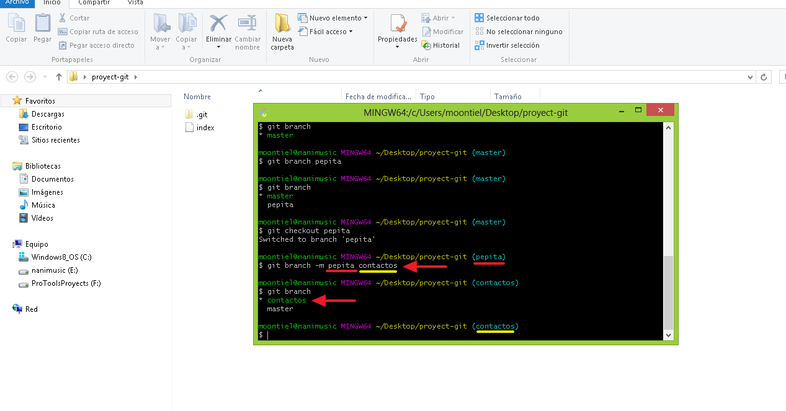
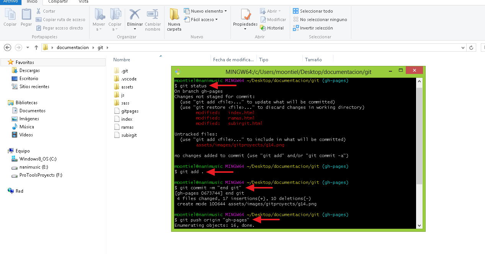
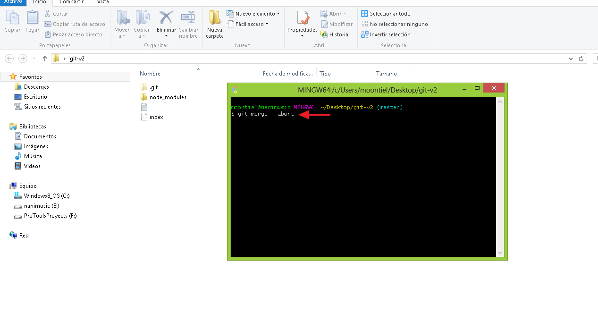

02. Ramas y Merge
En este apartado aprenderemos a crear y conocer ramas a cambiar entre ellas y como eliminar una, tambien aprenderemos a fucionar (unir) los cambios entre ramas haciendo uso de merge
01. Git branch: Conocer las ramas

02. Git branch "nombre rama": Crear rama

03. Git checkout "nombre rama": Cambiar entre ramas

04. Git branch -d "nombre rama": Eliminar una rama

05. Git branch -m "old name" "new name": Renombrar una rama

-------------------- End --------------------
01. Inicio del merge Subiendo los cambios

02. Git merge "nombre rama": Actualizando una rama

End branch & merge